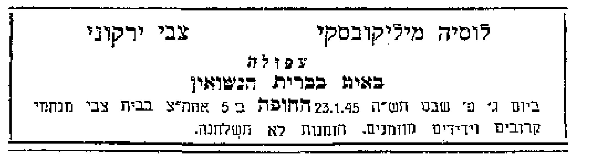

ירקוני / בנקו / מיליקובסקי / מרמור
המשפחה, דרך המקורות.
מאברהם עמנואל בעפולה אל דורות קודמים. עץ משפחה, מסמכים מקוריים ושאלות שעדיין פתוחות.

טוען את הארכיון המשפחתי…
עץ המשפחה
בחרו אדם כדי לקרוא את הסיפור המתועד שלו ולפתוח את מסמכי המקור.
מקור מתועדמידע משפחתימקור משנימועמד / זיהוי פתוח
קווים אנכיים מציינים הורות, קווים אופקיים זוגיות. סוג הקו מציין את מקור הקשר. הענפים המועמדים מוצגים בנפרד.
ספריית המסמכים
כל הסריקות ודוחות המחקר שנשמרו. פתיחת מסמך אינה מעידה שכל השמות בו פוענחו או שויכו למשפחה.
תאריכים, במקור שלהם
התאריכים מוצגים לפי מסמכים או מידע משפחתי. תאריכי פלונסק נשמרים כפי שנכתבו, ללא המרה בין לוחות.
מה ידוע, ומה עדיין פתוח
תמונת המצב המעודכנת קודמת לקריאות ישנות ביומן. הממצאים נשמרים עם מקורותיהם ועם גבולות הבדיקה.